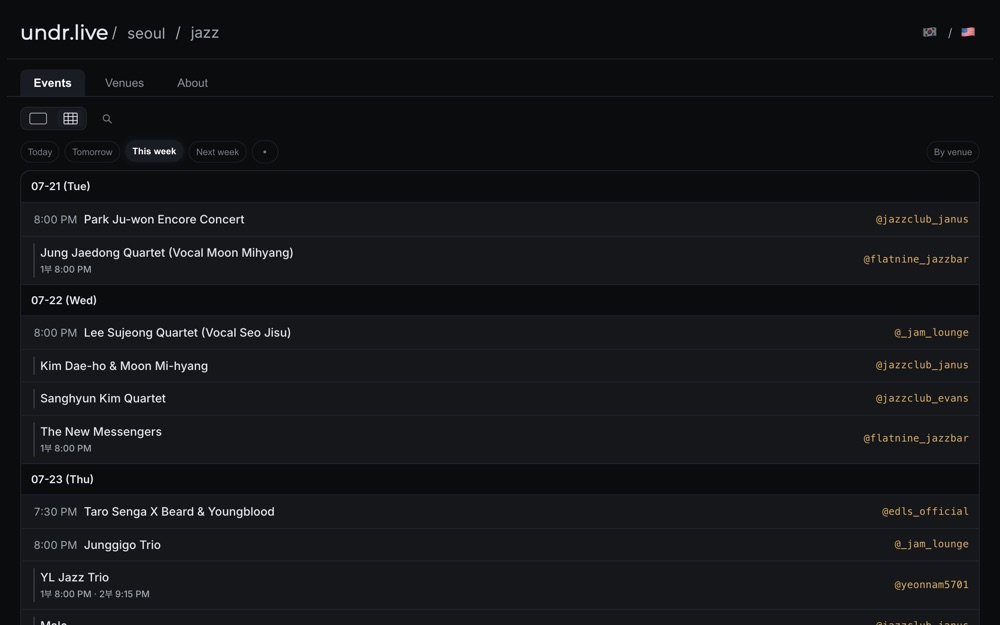
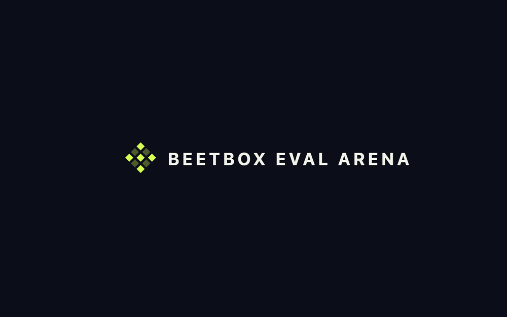
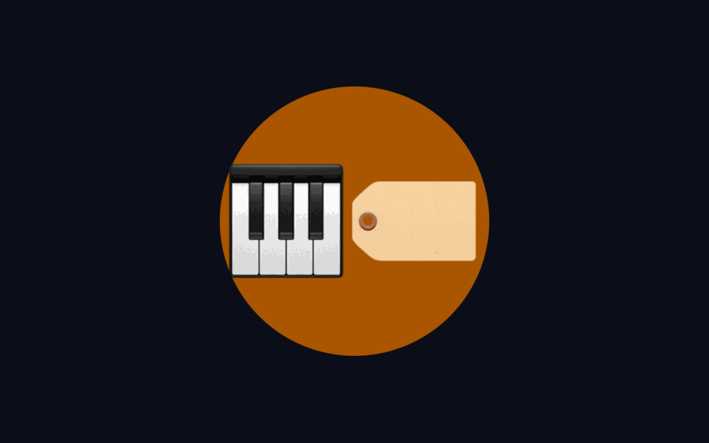

Projects

undr.live
Jazz listings for Seoul. It reads about 100 venue Instagram accounts every night, pulls the show details out of the posters with a vision model, and publishes the schedule.

Eval Arena
Coding agents were each given the same drum-sequencer reference and asked to rebuild it. Play any two against each other, or against the original.
Kapre
Audio preprocessing as Keras layers. STFT, melspectrogram and friends compute on the GPU inside your model, so training and serving run the same graph instead of two that drift apart.

Music Classification Tutorial
A web book on music classification beyond supervised learning, written with co-authors and taught as the ISMIR 2021 tutorial.
LLMs <3 MIR Tutorial
A web book on large language models for music information retrieval, written after a year of building with them and suffering from them.